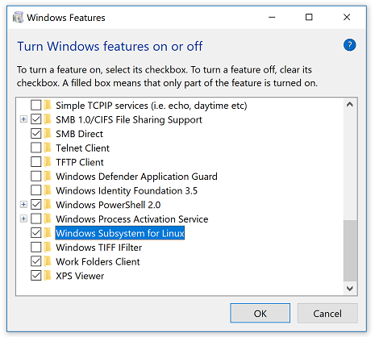
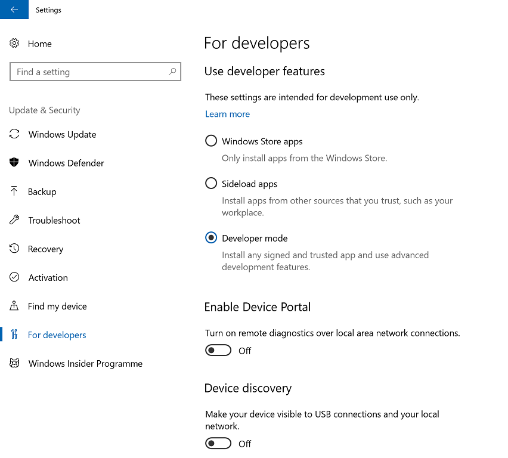
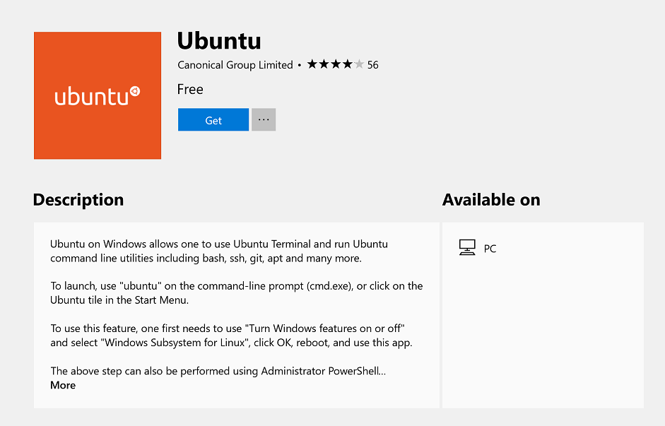
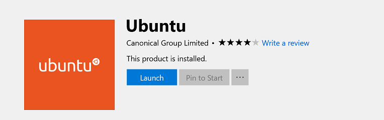
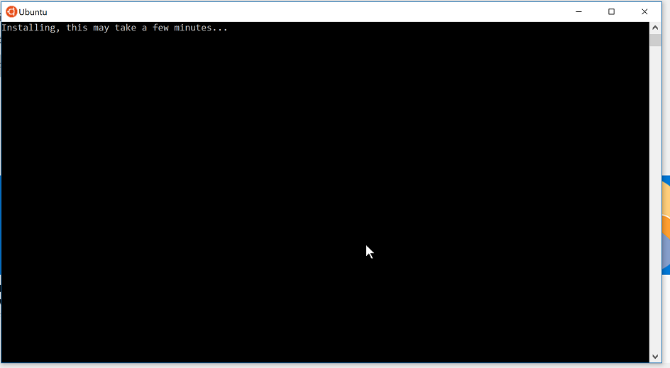
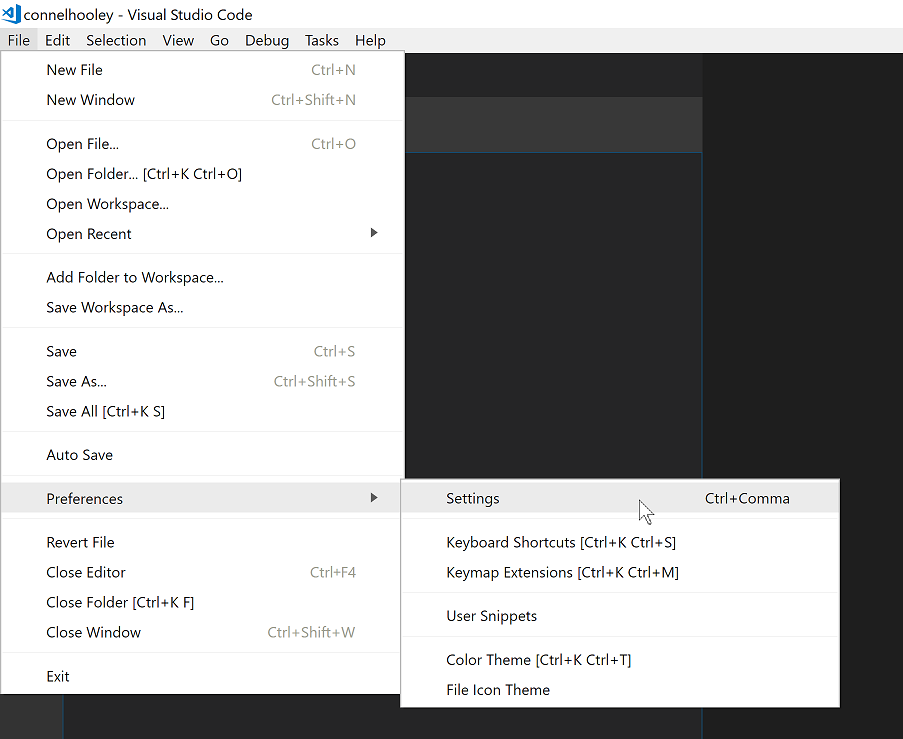
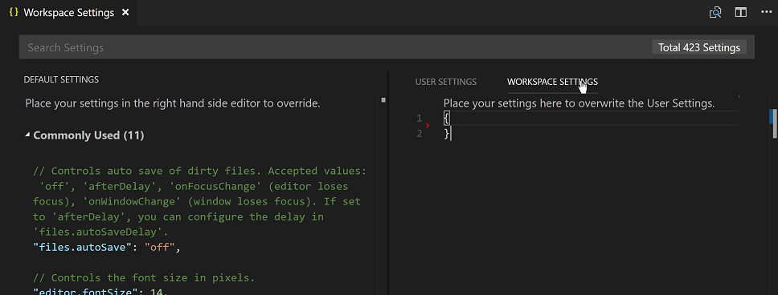
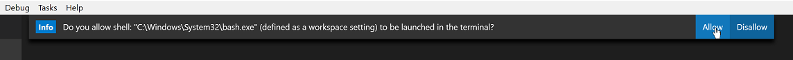
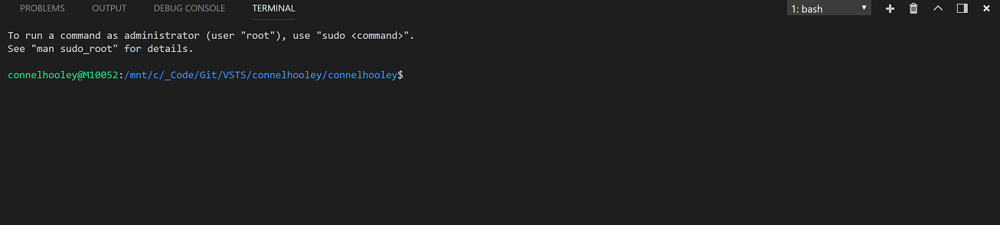

Installing Jekyll on Windows
BackgroundGo to Background section
Jekyll is not officially supported on Windows, but thanks to a new feature of Windows 10, we can still create Jekyll websites on Windows without any issues. Jekyll now recommends installing it using Bash on Windows. This guide walks through how to do it and teaches you a little about how Bash and Linux works along the way. This guide assumes you have Windows 10 Fall Creators Update (version 1709) installed. I'll also show you how to set up Visual Studio Code to use Bash.
WSL?Go to WSL? section
Jekyll is written in Ruby which itself runs in Bash. Bash is like Linux and Mac's equivalent to CMD or PowerShell. Traditionally installing Ruby in Windows required installing lots of Bash commands that worked as a shim to getting Bash applications running on Windows. Windows 10 has a new feature you can enable that allows you to load a full Linux distribution into a Bash prompt that has access to the Windows file system called WSL (Windows Subsystem for Linux). This is a better approach to polluting your PowerShell and Command Prompt terminals with Bash commands.
Installing BashGo to Installing Bash section
Start off by enabling WSL on your machine. Press and search for "Turn Windows features on or off". Tick "Windows Subsystem for Linux" and follow the prompts.

Now enable "developer mode" if you haven't done this before. Go to "Settings" then "Update & Security" then "For developers" on the left-hand side and then finally click on "Developer mode".

Now open the "Microsoft Store" and search for "Ubuntu". Click on "Get".

Once is it installed click on "Launch".

Setting up BashGo to Setting up Bash section
Wait for Ubuntu to finish installing.

You will then be asked to supply a username and password. This username and password is only used inside the Bash window. To open a Bash window in Windows you need to already be logged in to Windows with a valid Windows account, so don't worry about having a secure password if you're only working on your local dev machine. When typing your password, it appears like you're not typing (e.g. no asterisks appear with each key press in the console). Don't let that fool you, just type your password and press enter. This is the behaviour of Bash whenever you type in a password.
Inside Ubuntu apt-get is used to install and update applications. Installing applications in Linux is more like installing NPM or NuGet packages, rather than downloading installers like in Windows. Linux has "repositories" of packages of software. You must add a repository that contains the software you want to install, then install the package. This means that the vendor of the package can update it inside the repository and the update is then downloaded and installed as part of OS updates.
Ubuntu keeps a local database/cache of all the packages that are available to install. Firstly, we must update this local database with this command:
sudo apt-get update -y
NOTE:
sudois the Linux equivalent of "running as administrator" {: .smaller}
You will be asked to enter your Linux password. Again, don't be fooled if nothing appears in the console while you type.
Now our Ubuntu installation knows about all the latest packages, run the following command to update them all:
sudo apt-get upgrade -y
Installing Jekyll in BashGo to Installing Jekyll in Bash section
Now our Ubuntu installation is up to date we can start to follow the instructions from Jekyll's website to install it. Add a reference to the Jekyll repository by entering the following command:
sudo apt-add-repository ppa:brightbox/ruby-ng
You will be asked to press enter to confirm. Once this has completed update your package database to include the packages in the newly added repository:
sudo apt-get update -y
Then install Ruby and Jekyll's other dependencies:
sudo apt-get install ruby2.3 ruby2.3-dev build-essential dh-autoreconf -y
Ruby has its own form of package system called Gems. A Gem in Ruby is synonymous with an NPM package in Node. Update gems installed by default with Ruby with the following command:
sudo gem update
Then install the jekyll and bundler gems. Bundler is a Ruby thing that Jekyll uses:
sudo gem install jekyll bundler
You can confirm the installation by entering the following command:
jekyll -v
Creating a Jekyll SiteGo to Creating a Jekyll Site section
This should print something like jekyll 3.7.2. Your C drive is "mounted" into the Ubuntu instance running within windows. This means it lives within the /mnt/c/ directory inside Bash (note directories as separated by forward slashes rather than back slashes in Linux). So, to change directory to C:\_Code\Git\ you would type the following:
cd /mnt/c/_Code/Git/
CD to the directory you wish to put your Jekyll website's folder into. Run the following command to create a new Jekyll website (which in turn, creates a folder for your website). Obviously replace yourwebsitenamehere with what you want to call your site:
jekyll new yourwebsitenamehere
Setting up Visual Studio CodeGo to Setting up Visual Studio Code section
If you haven't installed Visual Studio Code, do so now. Open VS Code inside the folder the jekyll new command created. You can do this by using the file menu or by right clicking in the folder in file explorer. Once you have opened VS Code in the folder click on "File" then "Preferences" then "Settings".

Then click on Workspace settings on the right-hand side.

Place the following JSON in Workspace settings:
{
"terminal.integrated.shell.windows": "C:\\Windows\\System32\\bash.exe"
}
This will ensure Bash is used in the VS Code's integrated terminal when you open this folder.
Now open the integrated terminal by pressing CTRL + ' (that's a single quote). You may be asked to confirm your choice of using Bash in the terminal, click "Allow".

You will now see a Bash terminal in VS Code:

You can now run Jekyll commands in the integrated terminal. To launch your Jekyll website run the following command:
jekyll serve